Code
# Load packages
library(tidyverse) # For dplyr, ggplot, and friends
library(ggdag) # For plotting DAGs
library(dagitty) # For working with DAG logicThe easiest way to quickly build DAGs and find adjustment sets and testable implications is to use dagitty.net.
This video shows how to use it:
You can use the ggdag and dagitty packages in R to build and work with DAGs too. I typically draw an initial DAG in my browser with dagitty.net and then I rewrite it in code in R so that it’s more official and formal and reproducible.
(This is a heavily cleaned up and annotated version of the code from the video.)
# Load packages
library(tidyverse) # For dplyr, ggplot, and friends
library(ggdag) # For plotting DAGs
library(dagitty) # For working with DAG logicThe general process for making and working with DAGs in R is to create a DAG object with dagify() and then plot it with ggdag(). The documentation for ggdag is really good and helpful and full of examples. Check these pages for all sorts of additional details:
The syntax for dagify() is similar to the formula syntax you’ve been using for building regression models with lm(). The formulas you use in dagify() indicate the relationships between nodes.
For instance, in this DAG, y is caused by x, a, and b (y ~ x + a + b), and x is caused by a and b (x ~ a + b). This means that a and b are confounders. Use the exposure and outcome arguments to specify which nodes are the exposure (or treatment/intervention/program) and the outcome.
# Create super basic DAG
simple_dag <- dagify(
y ~ x + a + b,
x ~ a + b,
exposure = "x",
outcome = "y"
)
# Adding a theme_dag() layer to the plot makes it have a white background with no axis labels
ggdag(simple_dag) +
theme_dag()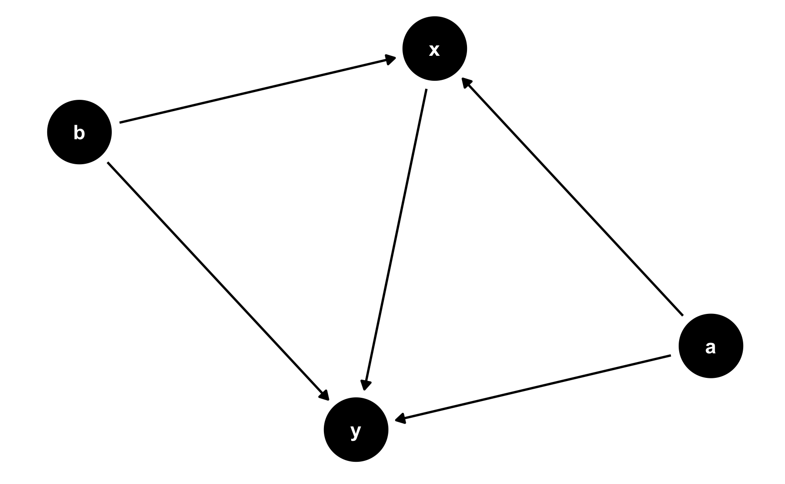
If you want to plot which nodes are the exposure and outcome, use ggdag_status() instead:
ggdag_status(simple_dag) +
theme_dag()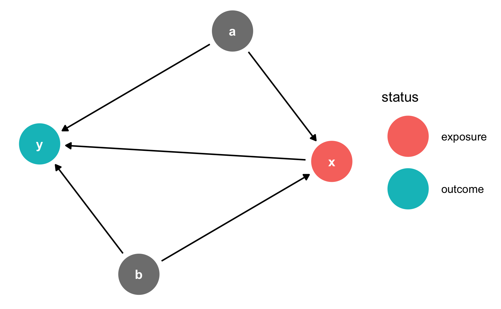
Notice how the layout is different in both of those graphs. By default, ggdag() positions the nodes randomly every time using a network algorithm. You can change the algorithm by using the layout argument: ggdag(simple_dag, layout = "nicely"). You can see a full list of possible algorithms by running ?layout_tbl_graph_igraph in the console.
Alternatively, you can specify your own coordinates so that the nodes are positioned in the same place every time. Do this with the coords argument in dagify().
The best way to figure out what these numbers should be is to draw the DAG on paper or on a whiteboard and add a grid to it and then figure out the coordinates. For instance, in this DAG there are three rows and three columns: x and y go in the middle row (row 2) while a and b go in the middle column (column 2). It can also be helpful to not include theme_dag() at first so you can see the numbers for the underlying grid. Once you have everything positioned correctly, add theme_dag() to clean it up.
simple_dag_with_coords <- dagify(
y ~ x + a + b,
x ~ a + b,
exposure = "x",
outcome = "y",
coords = list(x = c(x = 1, a = 2, b = 2, y = 3),
y = c(x = 2, a = 1, b = 3, y = 2))
)
ggdag_status(simple_dag_with_coords) +
theme_dag()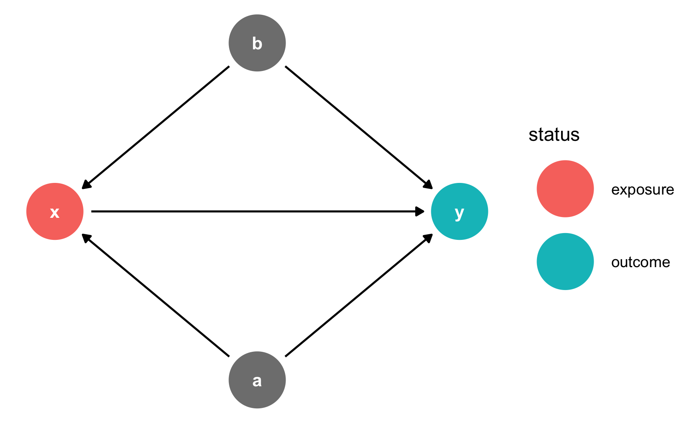
The variable names you use do not have to be limited to just x, y, and other lowercase letters. You can any names you want, as long as there are no spaces.
dag_with_var_names <- dagify(
outcome ~ treatment + confounder1 + confounder2,
treatment ~ confounder1 + confounder2,
exposure = "treatment",
outcome = "outcome"
)
ggdag_status(dag_with_var_names) +
theme_dag()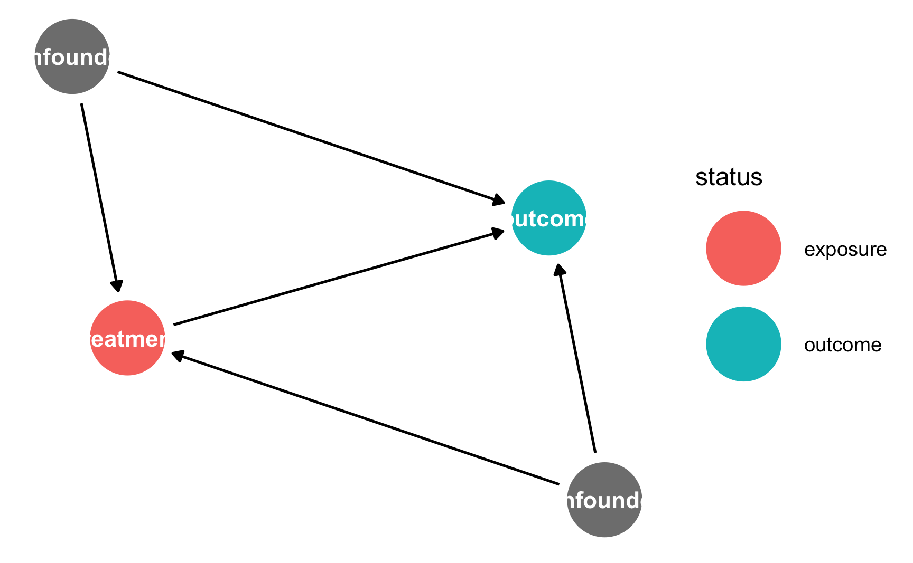
However, unless you use very short names, it is likely that the text will not fit inside the nodes. To get around this, you can add labels to the nodes using the labels argument in dagify(). Plot the labels by setting use_labels = "label" in ggdag(). You can turn off the text in the nodes with text = FALSE in ggdag().
dag_with_coords_and_labels <- dagify(
y ~ x + a + b,
x ~ a + b,
exposure = "x",
outcome = "y",
labels = c(y = "Outcome", x = "Treatment",
a = "Confounder 1", b = "Confounder 2"),
coords = list(x = c(x = 1, a = 2, b = 2, y = 3),
y = c(x = 2, a = 1, b = 3, y = 2))
)
ggdag_status(dag_with_coords_and_labels,
use_labels = "label", text = FALSE) +
guides(fill = "none", color = "none") + # Disable the legend
theme_dag()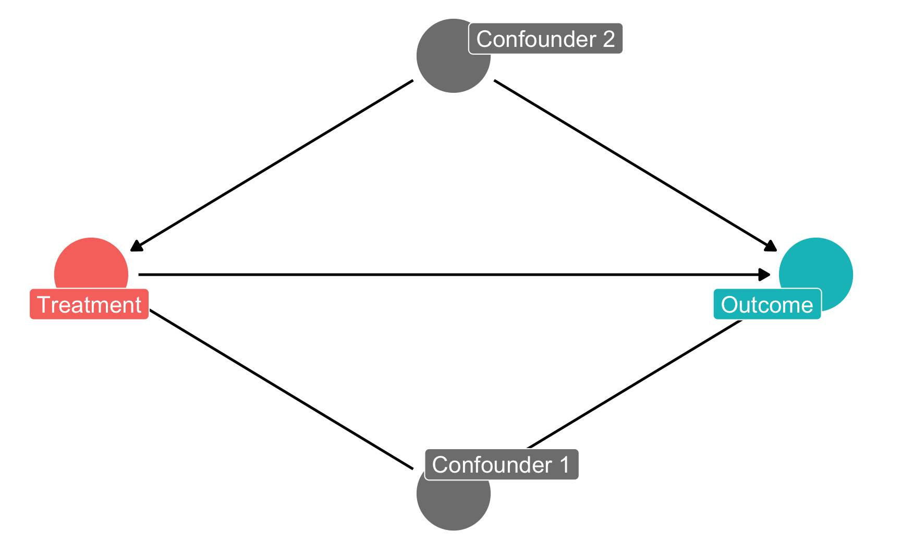
R can also perform analysis on DAG objects. For example, we can find all the testable implications from the DAG using the impliedConditionalIndependencies() function from the dagitty package. For this simple DAG, there is only one: a should be independent of b. If we had a dataset with columns for each of these variables, we could check if this is true by running cor(a, b) to see if the two are related.
impliedConditionalIndependencies(simple_dag)
## a _||_ bWe can also find all the paths between x and y using the paths() function from the dagitty package. We can see that there are three open paths between x and y:
paths(simple_dag)
## $paths
## [1] "x -> y" "x <- a -> y" "x <- b -> y"
##
## $open
## [1] TRUE TRUE TRUEThe first open path is fine—we want a single d-connected relationship between treatment and outcome—but the other two indicate that there is confounding from a and b. We can see what each of these paths are with the ggdag_paths() function from the ggdag package:
ggdag_paths(simple_dag_with_coords) +
theme_dag()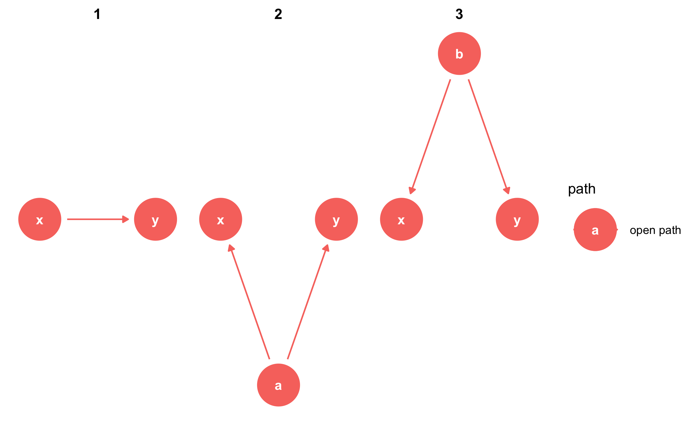
Instead of listing out all the possible paths and identifying backdoors by hand, you can use the adjustmentSets() function in the dagitty package to programmatically find all the nodes that need to be adjusted. Here we see that both a and b need to be controlled for to isolate the x -> y relationship.
adjustmentSets(simple_dag)
## { a, b }You can also visualize the adjustment sets with ggdag_adjustment_set() in the ggdag package. Make sure you set shadow = TRUE to draw the arrows coming out of the adjusted nodes—by default, those are not included.
ggdag_adjustment_set(simple_dag_with_coords, shadow = TRUE) +
theme_dag()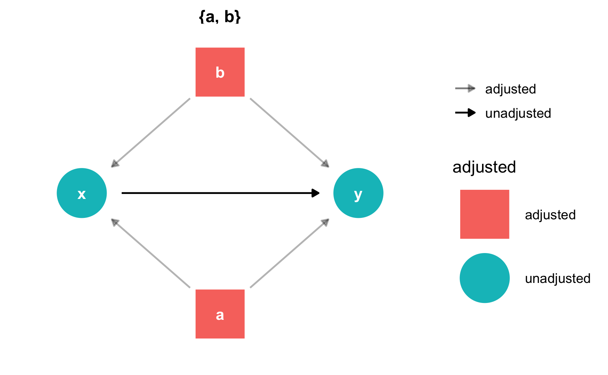
R will find minimally sufficient adjustment sets, which includes the fewest number of adjustments needed to close all backdoors between x and y. In this example DAG there was only one set of variables (a and b), but in other situations there could be many possible sets, or none if the causal effect is not identifiable.
ggdag()If you use dagitty.net to draw a DAG, you’ll notice that it generates some code for you in the model code section:

You can copy that dag{ ... } code and paste it into R to define a DAG object rather than use the dagify() function. To do this, use the dagitty() function from the dagitty library and include the whole generated model code in single quotes (''):
model_from_dagitty <- dagitty('dag {
bb="0,0,1,1"
"A confounder" [pos="0.809,0.306"]
"Another confounder" [pos="0.810,0.529"]
"Some outcome" [outcome,pos="0.918,0.432"]
"Some treatment" [exposure,pos="0.681,0.426"]
"A confounder" -> "Some outcome"
"A confounder" -> "Some treatment"
"Another confounder" -> "Some outcome"
"Another confounder" -> "Some treatment"
"Some treatment" -> "Some outcome"
}
')
ggdag(model_from_dagitty) +
theme_dag()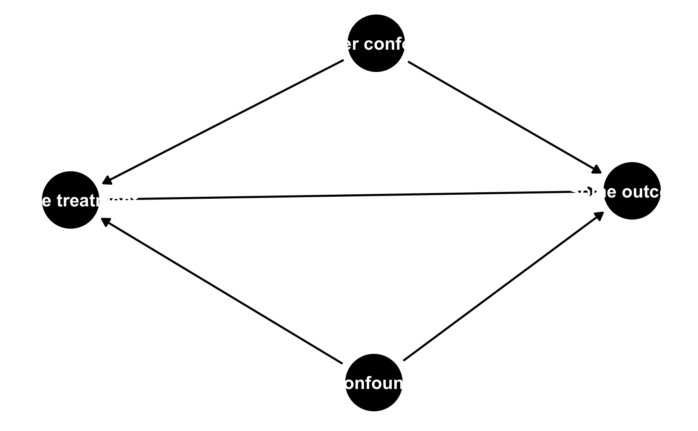
By default it’s going to look ugly because (1) the node labels don’t fit, and (2) slight differences in the coordinates make it so the nodes don’t perfectly align with each other. To fix coordinate alignment, you can modify the numbers in the generated DAG code. Here I rounded the numbers so that they’re all 0.3, 0.8, etc.
To fix the label issue, you can add the use_labels argument like normally. Only here, you can’t specify use_labels = "label". Instead, when you specify a DAG using dagitty’s code like this, the column in the underlying dataset that contains the labels is named name, so you need to use use_labels = "name".
Other ggdag() variations like ggdag_status() will still work fine.
model_from_dagitty_rounded <- dagitty('dag {
bb="0,0,1,1"
"A confounder" [pos="0.8,0.3"]
"Another confounder" [pos="0.8,0.5"]
"Some outcome" [outcome,pos="0.9,0.4"]
"Some treatment" [exposure,pos="0.7,0.4"]
"A confounder" -> "Some outcome"
"A confounder" -> "Some treatment"
"Another confounder" -> "Some outcome"
"Another confounder" -> "Some treatment"
"Some treatment" -> "Some outcome"
}
')
ggdag_status(model_from_dagitty_rounded, text = FALSE, use_labels = "name") +
guides(color = "none") + # Turn off legend
theme_dag()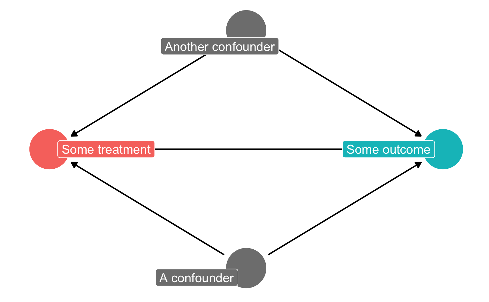
You can test if your stated relationships are correct by looking at the conditional independencies that are implied by the DAG. In dagitty.net, these appear in the sidebar in the “Testable implications” section. To show how this works, we’ll use a simulated dataset that I generated about a fictional mosquito net program. Download the data here if you want to follow along:
Researchers are interested in whether using mosquito nets decreases an individual’s risk of contracting malaria. They have collected data from 1,752 households in an unnamed country and have variables related to environmental factors, individual health, and household characteristics. Additionally, this country has a special government program that provides free mosquito nets to households that meet specific requirements: to qualify for the program, there must be more than 4 members of the household, and the household’s monthly income must be lower than $700 a month. Households are not automatically enrolled in the program, and many do not use it. The data is not experimental—researchers have no control over who uses mosquito nets, and individual households make their own choices over whether to apply for free nets or buy their own nets, as well as whether they use the nets if they have them.
mosquito_dag <- dagify(
malaria_risk ~ net + income + health + temperature + resistance,
net ~ income + health + temperature + eligible + household,
eligible ~ income + household,
health ~ income,
exposure = "net",
outcome = "malaria_risk",
coords = list(x = c(malaria_risk = 7, net = 3, income = 4, health = 5,
temperature = 6, resistance = 8.5, eligible = 2, household = 1),
y = c(malaria_risk = 2, net = 2, income = 3, health = 1,
temperature = 3, resistance = 2, eligible = 3, household = 2)),
labels = c(malaria_risk = "Risk of malaria", net = "Mosquito net", income = "Income",
health = "Health", temperature = "Nighttime temperatures",
resistance = "Insecticide resistance",
eligible = "Eligible for program", household = "Number in household")
)
ggdag_status(mosquito_dag, use_labels = "label", text = FALSE) +
guides(fill = "none", color = "none") + # Disable the legend
theme_dag()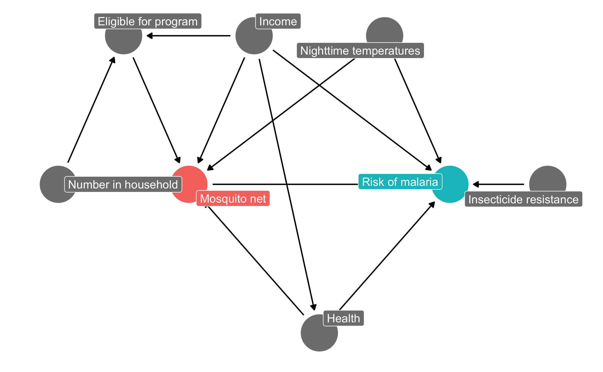
The causal graph above outlines the complete relationship between mosquito net use and risk of malaria. Each node in the DAG is a column in the dataset collected by the researchers, and includes the following:
malaria_risk): The likelihood that someone in the household will be infected with malaria. Measured on a scale of 0–100, with higher values indicating higher risk.net and net_num): A binary variable indicating if the household used mosquito nets.eligible): A binary variable indicating if the household is eligible for the free net program.income): The household’s monthly income, in US dollars.temperature): The average temperature at night, in Celsius.health): Self-reported healthiness in the household. Measured on a scale of 0–100, with higher values indicating better health.household): Number of people living in the household.resistance): Some strains of mosquitoes are more resistant to insecticide and thus pose a higher risk of infecting people with malaria. This is measured on a scale of 0–100, with higher values indicating higher resistance.According to the DAG, malaria risk is caused by income, temperatures, health, insecticide resistance, and mosquito net use. People who live in hotter regions, have lower incomes, have worse health, are surrounded by mosquitoes with high resistance to insecticide, and who do not use mosquito nets are at higher risk of contracting malaria than those who do not. Mosquito net use is caused by income, nighttime temperatures, health, the number of people living in the house, and eligibility for the free net program. People who live in areas that are cooler at night, have higher incomes, have better health, have more people in the home, and are eligible for free government nets are more likely to regularly use nets than those who do not. The DAG also shows that eligibility for the free net program is caused by income and household size, since households must meet specific thresholds to qualify.
First, let’s download the dataset, put in a folder named data, and load it:
# Load the data.
# It'd be a good idea to click on the "mosquito_nets.csv" object in the
# Environment panel in RStudio to see what the data looks like after you load it
mosquito_nets <- read_csv("data/mosquito_nets.csv")We can use this data to check if the relationships defined by our DAG reflect reality. Recall that d-separation implies that nodes are statistically independent of each other and do not transfer associational information. If you draw the mosquito net DAG with dagitty.net, or if you run impliedConditionalIndependencies() in R, you can see a list of all the implied conditional independencies.
impliedConditionalIndependencies(mosquito_dag)
## elgb _||_ hlth | incm
## elgb _||_ mlr_ | hlth, incm, net, tmpr
## elgb _||_ rsst
## elgb _||_ tmpr
## hlth _||_ hshl
## hlth _||_ rsst
## hlth _||_ tmpr
## hshl _||_ incm
## hshl _||_ mlr_ | hlth, incm, net, tmpr
## hshl _||_ rsst
## hshl _||_ tmpr
## incm _||_ rsst
## incm _||_ tmpr
## net _||_ rsst
## rsst _||_ tmprThe _||_ symbol in the output here is the \(\perp\) symbol, which means “independent of”. The | in the output means “given”.
In the interest of space, we will not verify all these implied independencies, but we can test a few of them:
\(\text{Health} \perp \text{Household members}\): (Read as “Health is independent of household member count”.) Health should be independent of the number of people in each household. In the data, the two variables should not be correlated. This is indeed the case:
cor(mosquito_nets$health, mosquito_nets$household)
## [1] 9.8e-05\(\text{Income} \perp \text{Insecticide resistance}\): (Read as “Income is independent of insecticide resistance”.) Income should be independent of insecticide resistance. This is again true:
cor(mosquito_nets$income, mosquito_nets$resistance)
## [1] 0.014\(\text{Malaria risk} \perp \text{Household members}\ |\ \text{Health, Income, Bed net use, Temperature}\): (Read as “Malaria risk is independent of house member count given health, income, bed net use, and temperature”.) Malaria risk should be independent of the number of household members given similar levels of health, income, mosquito net use, and nighttime temperatures. We cannot use cor() to test this implication, since there are many variables involved, but we can use a regression model to check if the number of household members is significantly related to malaria risk. It is not significant (\(t = -0.17\), \(p = 0.863\)), which means the two are independent, as expected.
lm(malaria_risk ~ household + health + income + net + temperature,
data = mosquito_nets) %>%
broom::tidy()
## # A tibble: 6 × 5
## term estimate std.error statistic p.value
## <chr> <dbl> <dbl> <dbl> <dbl>
## 1 (Intercept) 76.2 0.966 78.9 0
## 2 household -0.0155 0.0893 -0.173 8.63e- 1
## 3 health 0.148 0.0107 13.9 9.75e- 42
## 4 income -0.0751 0.00104 -72.6 0
## 5 netTRUE -10.4 0.266 -39.2 2.63e-241
## 6 temperature 1.01 0.0310 32.5 1.88e-181We can check all the other conditional independencies to see if the DAG captures the reality of the full system of factors that influence mosquito net use and malaria risk. If there are substantial and significant correlations between nodes that should be independent, there is likely an issue with the specification of the DAG. Return to the theory of how the phenomena are generated and refine the DAG more.
There is a direct path between mosquito net use and the risk of malaria, but the effect is not causally identified due to several other open paths. We can either list out all the paths and find which open paths have arrows pointing backwards into the mosquito net node (run paths(mosquito_dag) to see these results), or we can let R find the appropriate adjustment sets automatically:
adjustmentSets(mosquito_dag)
## { health, income, temperature }Based on the relationships between all the nodes in the DAG, adjusting for health, income, and temperature is enough to close all backdoors and identify the relationship between net use and malaria risk. Importantly, we do not need to worry about any of the nodes related to the government program for free nets, since those nodes are not d-connected to malaria risk. We only need to worry about confounding relationships.
We can confirm this graphically with ggdag_adjustment_set():
ggdag_adjustment_set(mosquito_dag, shadow = TRUE,
use_labels = "label", text = FALSE) +
theme_dag()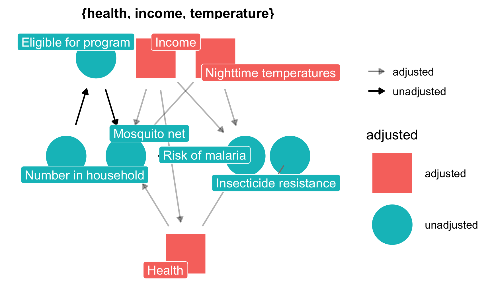